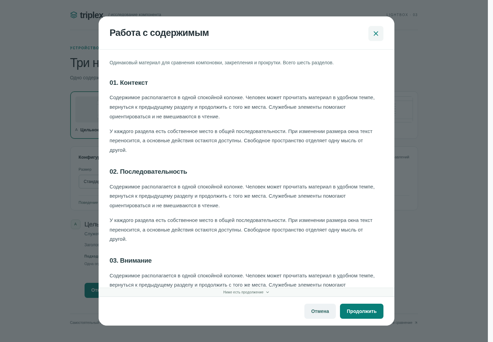
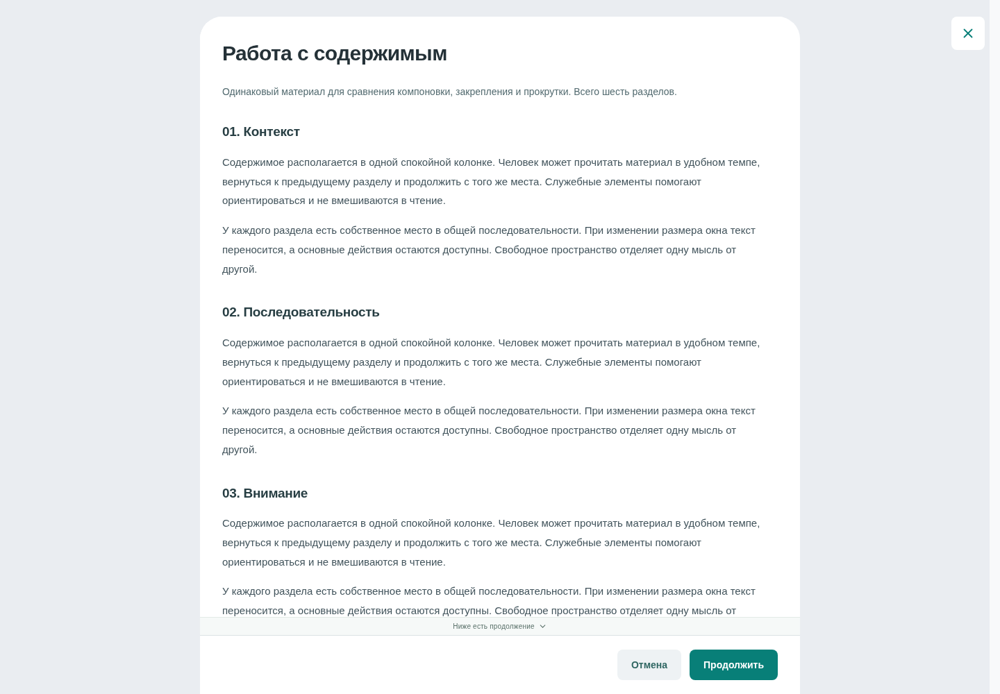
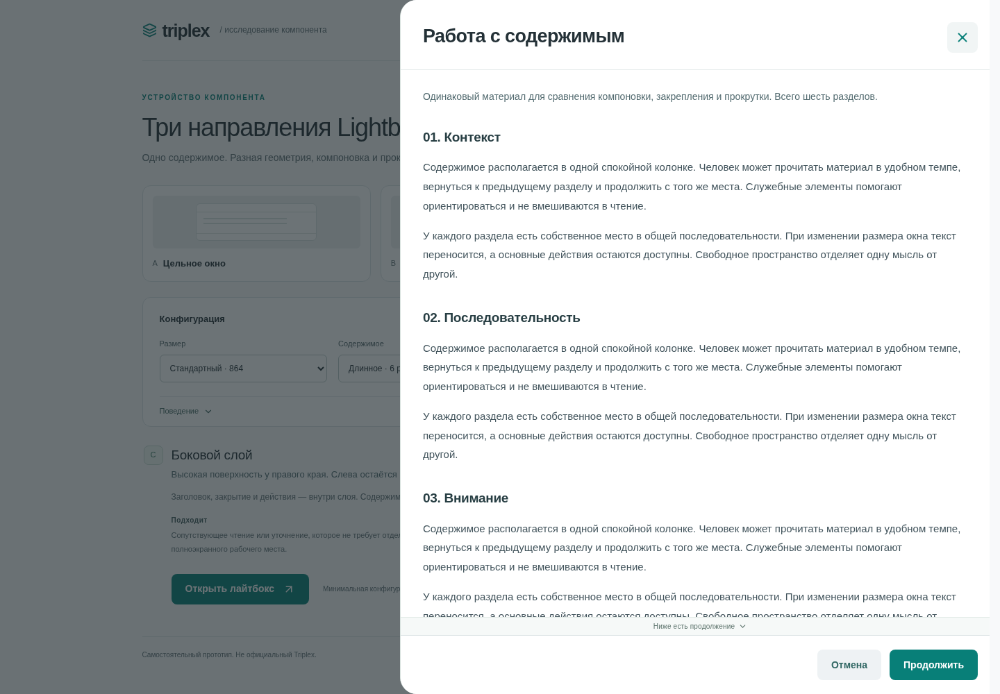

Три устройства Lightbox
Исследование оболочки: геометрия, служебные элементы, прокрутка и адаптация. Содержимое одинаково. Это самостоятельный прототип, не официальный компонент Triplex.
Живые сайты Triplex, Taiga, Carbon, Microsoft Learn и SWAN проверены в Chromium, но запросы блокирует прокси до загрузки страниц. Изучены официальные GitHub-исходники Triplex/Taiga и документации Carbon/Microsoft. Для SWAN достоверного альтернативного источника не найдено. Поведение сайтов в демонстрациях не выдаётся за проверенное.
Что подтверждено в Triplex
Lightbox — полноэкранная область для крупного содержимого и самостоятельного сценария. В официальном коде 1.53.0 есть Content, внешние Close/Prev/Next, опциональные боковые и верхние слои. Ширины внутренней колонки: 664/864/1064/1264 px. При ширине области до 1024 px отступы убираются, контролы переходят наверх.
Прокручивается полотно, фон блокируется. Page уже поддерживает закрепление; это не новая возможность нашего прототипа. У роли dialog есть aria-modal, фокус управляется FocusTrapExtended; при loading основной trap отключается. Имя диалога и начальный элемент зависят от интеграции. Реальный пользовательский эффект этих веток не проверен.
Предположение: внешние контролы полезны большому содержимому, но короткой задаче может лучше подходить цельная поверхность. Гипотеза: контекстная строка после ухода названия поможет ориентироваться. Измерений на пользователях не было.
Сравнение оболочек
| Источник | Устройство | Применимость и границы |
|---|---|---|
| Taiga Drawer Full Код 5.30.0 | Боковая поверхность start/end, 36.25rem с ограничением viewport. Header/footer — слоты, внутренний scrollbar, footer отдельно. Overlay опционален. Full — название насыщенного примера. | Для C: краевое положение и независимый footer. Drawer не всегда модален; здесь модальность задана явно. Полный keyboard-контракт живого примера не проверен. |
| Carbon Index → Modal v10 Исходник v10 | Ограниченное окно с header/body/footer, X и overlay. Четыре responsive-размера. Прокрутка тела; header/footer фиксированы. Документированы initial focus, trap и возврат. | Для A: ясная анатомия и ограниченная поверхность. Индекс сам не компонент. Для слишком большого/постоянного процесса нужна отдельная страница. Версии v10 и актуальная не смешиваются. |
| Teams Lightbox Исходник Microsoft Learn | Header, center stage, carousel. Back, Open in, действия с медиа и навигация; отдельные desktop/mobile композиции. Back или клик снаружи закрывает просмотр по руководству. | Для B: большой просмотр и отделение контролов. Не переносим редактирование и галерею: руководство исключает редактирование/коллаборацию. Численные размеры и keyboard-контракт не установлены. |
| SWAN Modal Dialog | Не подтверждено: страница недоступна через прокси. | Не используем как доказательство решений. Пробел исследования обозначен явно. |
Направления
A · Цельное окно
Центрированная поверхность по объёму содержимого. Шапка и действия неподвижны, прокручивается середина. На телефоне сохраняется небольшой внешний отступ. Подходит ограниченной задаче; пересекается с ModalWindow и не заменяет все полноэкранные сценарии.

B · Полотно — рекомендуемое для Triplex Lightbox
Страница почти на всю высоту; закрытие и навигация вне неё. Название прокручивается вместе с текстом; действия закреплены. На узком экране внешние контролы находятся в верхней строке. Ближе всего к назначению исходного Lightbox; короткий материал оставляет свободное пространство, контролы дальше от текста.

C · Боковой слой
Поверхность у правого края на всю высоту. Контекст слева виден, но недоступен. Название и действия внутри слоя, прокручивается середина. На телефоне слой занимает всю ширину. Это модальный вариант геометрии Drawer для сопутствующего чтения; широкая конфигурация оставляет меньше контекста. Вложенные окна ради демонстрации не добавлены.

Механики
- Признак продолжения: отдельная строка под скроллом показывает, что материал продолжается. На конце исчезает, место сохраняется — скачка нет. Резерв 26 px — компромисс. Отключается на странице.
- Контекстная шапка B: появляется после ухода заголовка. Сдвиг тела компенсируется scrollTop до отрисовки; координата абзаца проверена с допуском 1.5 px. Занимает 44 px. Отключается; A/C уже держат шапку и не получают дублирующую строку.
- Адаптивные действия: footer вне скролла, кнопки делят строку на узком экране. Закрепление и responsive уже есть в Triplex — это систематизация, не уникальная новинка.
Конфигурации и проверки
664/864/1064 px, 3 абзаца или 6 разделов, короткий/длинный заголовок, с действиями/без. По умолчанию минимум: компактная ширина, короткий текст, без футера и навигации. Все настройки находятся на исходной странице. Номер материала можно переключать отдельно; текст намеренно одинаков.
106/106 браузерных тестов прошли: сочетания содержимого, заголовков и действий на 1440/768/375 px; размеры; высоты 400/320/600; начало/середина/конец скролла; keyboard, backdrop, X, действия и возврат фокуса; axe; настоящий browser zoom 200% для каждого направления. Сборка и TypeScript проходят. Скринридеры, Safari/Firefox и физический ручной проход клавиатурой не проверялись. Автотесты не доказывают роста пользовательских метрик.
Узнаваемость: нейтральное полотно #EAEDF1, белые поверхности, бирюзовый акцент, крупные верхние углы B. Ширины — референсы внутренних колонок Triplex, а не точная копия ViewManager. Arial/Lucide, цвета действий, отступы и геометрия A/C — обозначенные приближения.
Вернуться к прототипу →